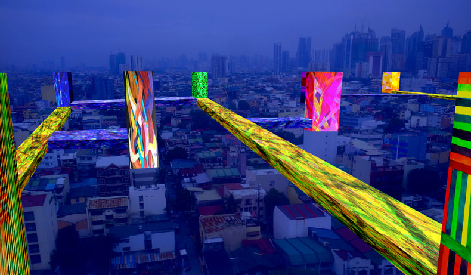
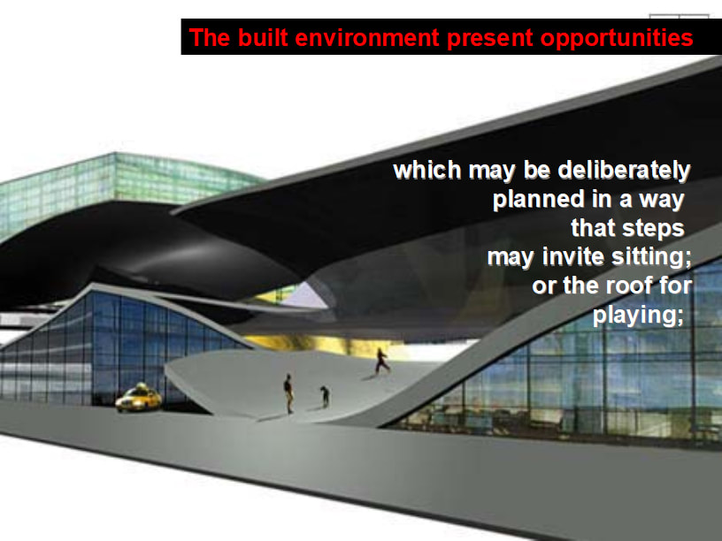
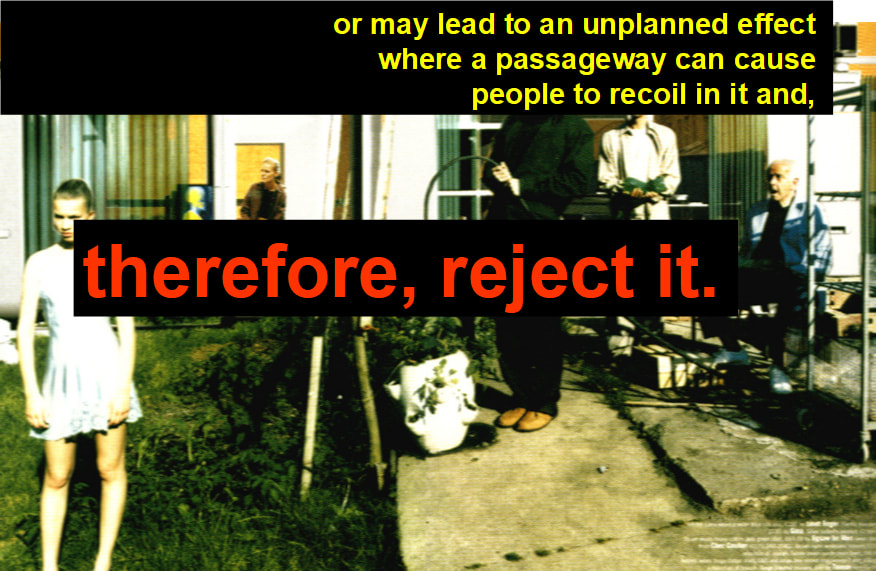
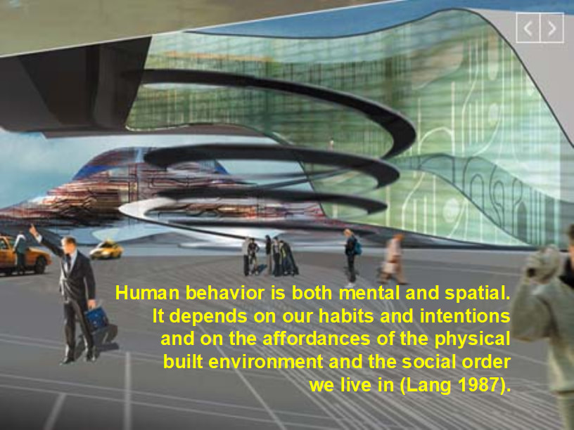
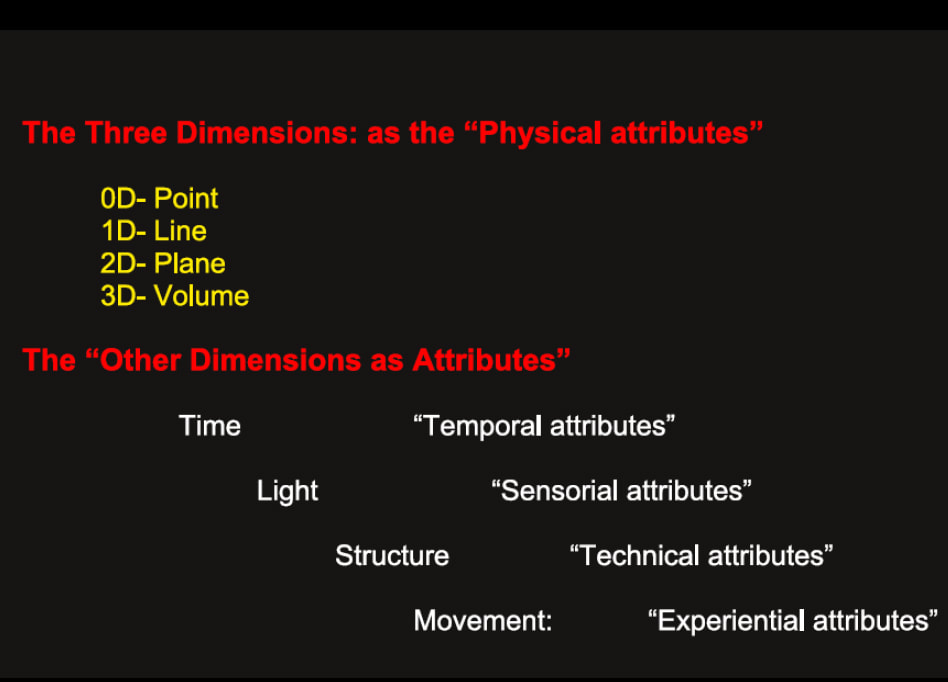
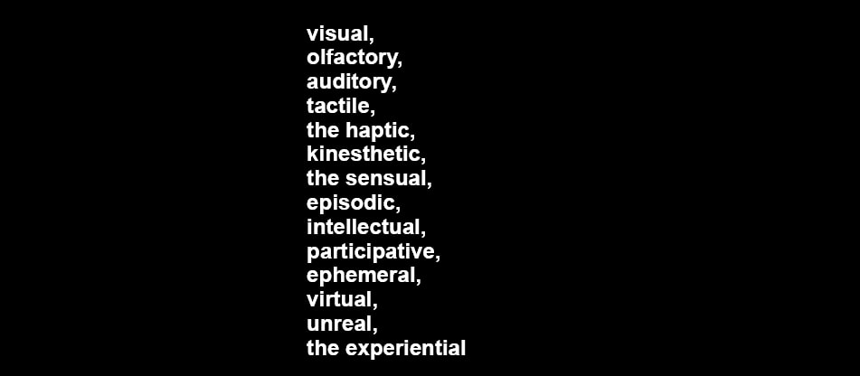
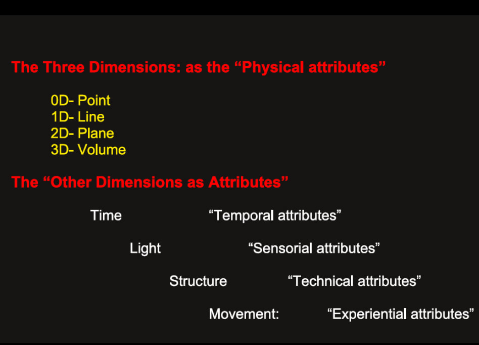
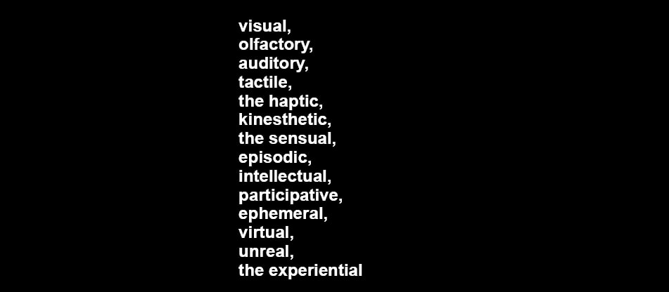

FREDINEL BANAAG | STUDIO SOLUM

HOMAGE PAVILIONS AS EXPERIENTIAL MEMORIALS
foresights/insights/hindsights on architecture

WHAT THEN IS THE FUTURE NOW?
January 2022
The FUTURENOW?
We realize that the prominent and exceptional people of the
past were not living in their respective time. They for some
wondrous reasons were living on a time ahead of them. For
some strange ways they acquired the visions, the impetus,
inspirations as you may say in their respective strong personal
urge to just do what they have done. How would Isaac Newton
relate the forces that act on the falling apple to that of a
“falling” moon? This initiated the so called Physics standard
model.
If the works of Kasimir Malevich resonates with you today;
then we can say that he was simply doing his art not for his
time but for your time, today. It is no wonder that having been
acquainted with that, Zaha Hadid stretched it further and crossed
it over into architecture that resulted into the iconic
Vitra Fire Station. And did she stop there? It simply became a
portal that opened up a higher, wider or perhaps deeper horizon
that she so ably mined for her train of succeeding projects.
The same can be said of Le Corbusier’s Ronchamp chapel, with
the crab-inspired double shell roof or the Villa Savoye that
resonated well into the minimalists aesthetics some 50 to 80
years later.
Perhaps it is good to wonder how Malevich will pursue his
abstraction today. This is not to put a damper on your
thoughts on how you handled the art of Malevich, or Magritte,
Marc Chagall or Matisse for that matter; for your art or
architecture is your intimate interaction or iteration,
And that is perfectly fine. However, re-thinking Le Corbusier’s
housing project in today’s terms invalidates his speculations
plainly because the conditions now were not how he envisioned
it to be. If however, the speculations are still validated,
then a ‘perfection’ has been achieved.
The terseness yet profoundness and the hidden depth of a single
haiku is an example. So is Tchaikovsky’s concert in C Minor,
and countless others. In this regard the Katsura Imperial Villa,
circa 1600’s, was 400 years ahead of its time with its ‘minimalist’
aesthetics still intact. The same thread perhaps is woven in the
architecture of Jimenez Lai or Takamatsu Shin with the other-worldly
image. We may thus ask, are they and the others designing for some
tomorrow?
That thought may bring us to the Bauhaus and how radical it was
that they seem to be engrossed on a one-hundred-years-hence designs.
Fortunately, that spirit still lingers on with us for instance in the
Apple/Jonathan Ive - Braun/Dieter Ram - Bauhaus lineage. These linkage
can also be traced in fabrics, furniture, and yes, even contemporary
dance- all because of the envisioning of tomorrow embodied in the Bauhaus.
How do we then do it? How do we re-imagine a time or some time
in the future?
For the theoretical physicists the past, the present and the
future are all linked. They can surely predict where a beam of
light will be in 100 light years in the future. In the same way
they can measure and know the origin of a light that reaches us
from a very specific spot, speck or dot in space, when it was
beamed in the past and its distance from earth.
For architects, designers, and artists the future is unknown.
We treat time- the past, present and the future differently.
However, the future can be speculated, imagined, interrogated
so that a risky, courageous, rigorous, inventive and predicated
envisioning can be had. Remember Malevich, et al.
Our visions can be wrong especially if it haphazardly done and
cast so far in time; but who knows; we can be wrong. Kurokawa’s
Nakagin “Capsule” Tower, was well-ahead although the capability
to be interchanged was not perfected so that only the upper most
units can be replaced without disrupting the others. The important
thing is that the intention was there.
What will tomorrow be, or what will some tomorrow be?
There are infinite scenarios:
1. Cancer is defeated, 2. The last ‘don't look up’ asteroid is
charted and mapped 20 light years ahead, 3. One can ‘buy’ an
education packet as all specializations are canned, 4. Antidote
to euthanasia discovered and produced, 5. End to the Japanese
disappearances, 5. Emergence of the 4th world, 6. Computer
language to decode all languages developed, 7. Prevalence of
interracial partnership, 8. Money is not what it is, 9. Nobel
prize for computer games included, 9. 3 levels of passport
(whatever that is), 10. Law against being poor enacted, 11.
Limit to riches established, 12. Back to philosophy and theology
101, 13. People as remnants of catastrophic war or climate change,
14. People opting to live deep, where air and light and water are
all manufactured. 15. Deja Vu for Blade Runner scenario, 16. The 7th
dimensional field formula established, 17. Impersonal and asexual
procreation debated... The list is on and on.
The farther one looks, it seems the freer the imagination becomes.
The nearer one speculates the more considerations may be equated
along. You can have your own re-imagination.
In architecture, design and arts, what is then the FUTURENOW?
TO CREATE ARCHITECTURE
December 2020
To Create Architecture is to Defy the Norm
Architecture is always a product or artifact- a creation of man. In man the propensity to discover is innate. Architecture and its many peripheral forms in its entirety continually fluctuates as the heart beats. Architecture though aims to find a plane where all the factors are in equilibrium so that a singular language or character emerges. However, due to man's propensity to look for other means, a different angle or probe into newer horizons a "newer" architecture may simultaneously emerge even as the perfection of the current architecture is celebrated. The desire to create newer forms is not mutually exclusive to the tenet of holding on to what has been practiced and thus perfected. These notions co-exist in man. Hence, architecture will always evolve.
It always starts with the defiance of the norm. Perhaps with a different material, an unusual methodology, a better program, newer construction system, or a unique idea based on an even unheard of philosophy coming from a different body of knowledge. The prompt for the production of architecture that defies the norm can indeed come from anything, anywhere and anyhow. This is the very same prompt that propels architecture to beat anew and apart yet also in simultaneity with the peaceful serenity of the norm.
But even the accepted norm has its inherent variations as Gaudi's design is profoundly different from the art nouveau of Mackintosh or Alberti's column is not of the same proportion as Vignola's though both follow exactly the same Order: until an entirely different genre soon emerges.
Architecture then defies, yes even it own identity until a newer one is born. It used to be that this defiance is spread out in hundred of years and covers large areas of influence so that a newer brand of architecture can be defined as other than the current norm. Now, this defiance is practiced with no regard to the boundary of influence so that at one time many architectural identities co-exist with one another (Bauhaus, De Stjl, Constructivist, etc).
Architectural historians has the habit of assigning dates when an iconic architecture is built and is assigned as a milestone to embody the end or start of a distinct architectural identity.
To do architecture is to follow the norm.
To create architecture, therefore, is to defy the norm.
Architecture is always a product or artifact- a creation of man. In man the propensity to discover is innate. Architecture and its many peripheral forms in its entirety continually fluctuates as the heart beats. Architecture though aims to find a plane where all the factors are in equilibrium so that a singular language or character emerges. However, due to man's propensity to look for other means, a different angle or probe into newer horizons a "newer" architecture may simultaneously emerge even as the perfection of the current architecture is celebrated. The desire to create newer forms is not mutually exclusive to the tenet of holding on to what has been practiced and thus perfected. These notions co-exist in man. Hence, architecture will always evolve.
It always starts with the defiance of the norm. Perhaps with a different material, an unusual methodology, a better program, newer construction system, or a unique idea based on an even unheard of philosophy coming from a different body of knowledge. The prompt for the production of architecture that defies the norm can indeed come from anything, anywhere and anyhow. This is the very same prompt that propels architecture to beat anew and apart yet also in simultaneity with the peaceful serenity of the norm.
But even the accepted norm has its inherent variations as Gaudi's design is profoundly different from the art nouveau of Mackintosh or Alberti's column is not of the same proportion as Vignola's though both follow exactly the same Order: until an entirely different genre soon emerges.
Architecture then defies, yes even it own identity until a newer one is born. It used to be that this defiance is spread out in hundred of years and covers large areas of influence so that a newer brand of architecture can be defined as other than the current norm. Now, this defiance is practiced with no regard to the boundary of influence so that at one time many architectural identities co-exist with one another (Bauhaus, De Stjl, Constructivist, etc).
Architectural historians has the habit of assigning dates when an iconic architecture is built and is assigned as a milestone to embody the end or start of a distinct architectural identity.
To do architecture is to follow the norm.
To create architecture, therefore, is to defy the norm.
INTIMACY AND ARCHITECTURE AND DESIGN
November 2020



INTIMACY AND ARCHITECTURE
Intimacy in architecture is layered within the dimension of personal appreciation (or rejection) of an architectural space. The degree of closeness or familiarity may have been acquired through the customary or constant use of the space over time. The subjectivity of this closeness ultimately varies from individual to individual due to the uniqueness of each person.
Nevertheless, there are architectural subtleties, which trigger almost the same or related effects to people of varied backgrounds or sensibilities. What is ugly is ugly (or uglier to some). It may not be probably awe inspiring to one - unless one possesses an abhorrent or discordant sensibility. Then, it is more of an exemption.
Architecture defines the quality our lives, affects our attitudes and eventually affords certain behavior to happen so we may adapt to the environment. The built environment present opportunities, which may be deliberately planned in a way that steps may invite sitting; or may lead to an unplanned effect where a passageway can cause people to recoil in it and, therefore, reject it.
Human behavior is both mental and spatial. It depends on our habits and intentions and on the affordances of the physical built environment and the social order we live in (Lang 1987).
Design impinges on people’s lives through the affordances it possesses. It cannot be presupposed, however, that all people has the potential to perceive the environment in the same manner. What is beautiful may not be beautiful at all to some.
Curiously, behavior has some predictability because it does not happen haphazardly. Hence, architecture and design to be effective dwells on this window of predictability and creatively speculates on the way people will respond to the design.
Thus, architecture and design has the power to touch lives and inspire people. On the other hand, architecture and design can also make life very miserable to the occupants and users: an awe-inspiring design or murder-by-architecture.
Architecture defines our lives through the provisions of settings and arena where our myriad daily activities happen and are afforded. Architectural confrontation is inescapable so much so that our daily encounters with architectural spaces almost always reside on the ordinary, non-chalant mode. We are not mindful of an architectural space unless somehow there is something in it that triggers us to respond.
The ‘extremeness of architecture’ both on the positive and the negative end is always successful in evoking certain reactions and, thus, capturing our ‘attention’. The responses we ‘give’ in return are always varied. Constancy in use or interaction cultivates familiarity and dilutes ones response over time. Constancy in use has the potential to deaden one’s sensibilities so that what was originally inspiring becomes ordinary, or what was once an aversion is now an acquisition – an acquired taste. There lies the danger, when the ugly becomes the ‘ok- na- rin’.
Extreme subsistence poverty promotes the primacy of utility over delight, and is a known ‘anti-dote to good design’ (well-being). On the other end, extreme wealth, in the wrong hands has the propensity to cause a glitzy, carnival grotesque-ness.
Design, therefore, is prudence.
 
Intimacy in architecture is layered within the dimension of personal appreciation (or rejection) of an architectural space. The degree of closeness or familiarity may have been acquired through the customary or constant use of the space over time. The subjectivity of this closeness ultimately varies from individual to individual due to the uniqueness of each person.
Nevertheless, there are architectural subtleties, which trigger almost the same or related effects to people of varied backgrounds or sensibilities. What is ugly is ugly (or uglier to some). It may not be probably awe inspiring to one - unless one possesses an abhorrent or discordant sensibility. Then, it is more of an exemption.
Architecture defines the quality our lives, affects our attitudes and eventually affords certain behavior to happen so we may adapt to the environment. The built environment present opportunities, which may be deliberately planned in a way that steps may invite sitting; or may lead to an unplanned effect where a passageway can cause people to recoil in it and, therefore, reject it.
Human behavior is both mental and spatial. It depends on our habits and intentions and on the affordances of the physical built environment and the social order we live in (Lang 1987).
Design impinges on people’s lives through the affordances it possesses. It cannot be presupposed, however, that all people has the potential to perceive the environment in the same manner. What is beautiful may not be beautiful at all to some.
Curiously, behavior has some predictability because it does not happen haphazardly. Hence, architecture and design to be effective dwells on this window of predictability and creatively speculates on the way people will respond to the design.
Thus, architecture and design has the power to touch lives and inspire people. On the other hand, architecture and design can also make life very miserable to the occupants and users: an awe-inspiring design or murder-by-architecture.
Architecture defines our lives through the provisions of settings and arena where our myriad daily activities happen and are afforded. Architectural confrontation is inescapable so much so that our daily encounters with architectural spaces almost always reside on the ordinary, non-chalant mode. We are not mindful of an architectural space unless somehow there is something in it that triggers us to respond.
The ‘extremeness of architecture’ both on the positive and the negative end is always successful in evoking certain reactions and, thus, capturing our ‘attention’. The responses we ‘give’ in return are always varied. Constancy in use or interaction cultivates familiarity and dilutes ones response over time. Constancy in use has the potential to deaden one’s sensibilities so that what was originally inspiring becomes ordinary, or what was once an aversion is now an acquisition – an acquired taste. There lies the danger, when the ugly becomes the ‘ok- na- rin’.
Extreme subsistence poverty promotes the primacy of utility over delight, and is a known ‘anti-dote to good design’ (well-being). On the other end, extreme wealth, in the wrong hands has the propensity to cause a glitzy, carnival grotesque-ness.
Design, therefore, is prudence.
 